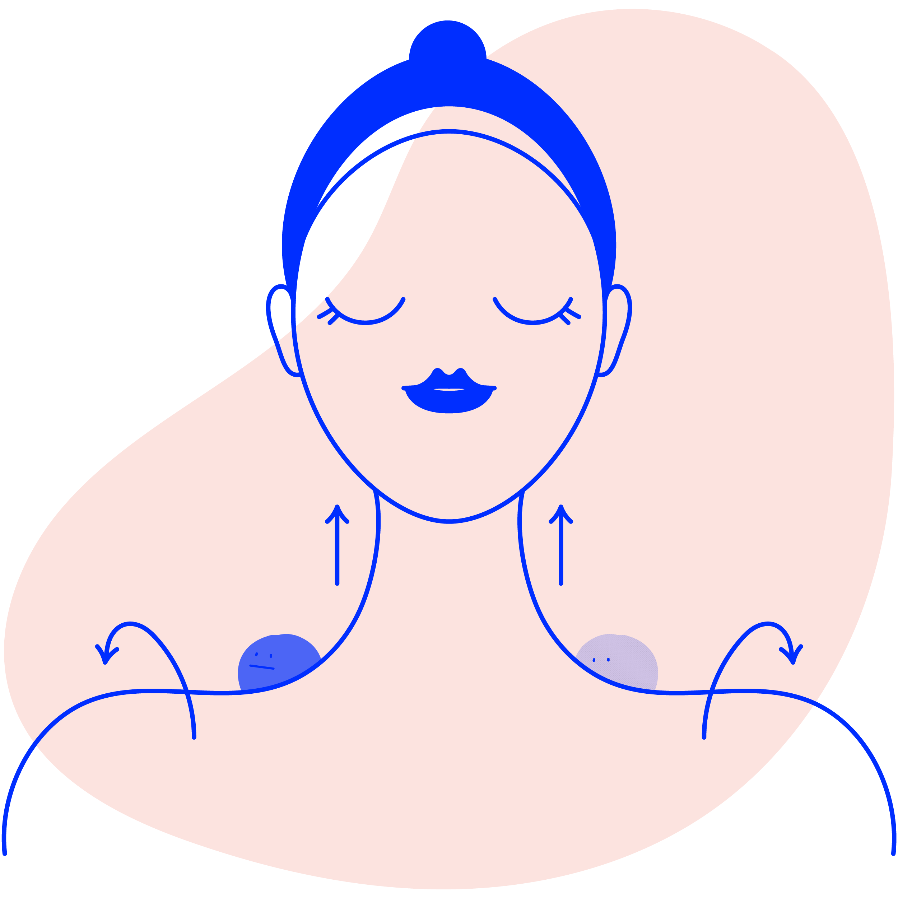
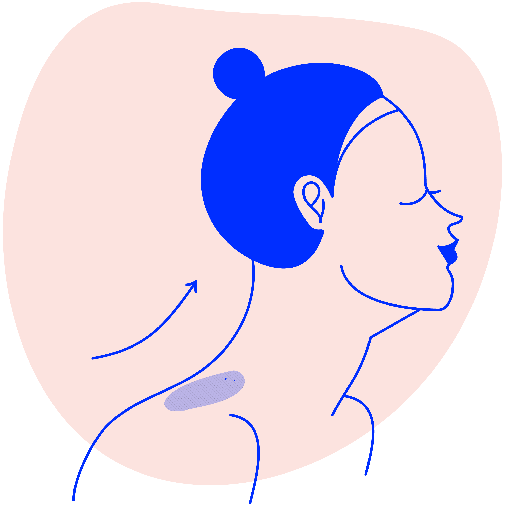

기본자세
- 양발을 어깨너비로 벌리고 발끝은 정면, 허리는 쭉 펴준다
- 어깨를 뒤로 돌려 젖히면서 손끝과 어깨를 아래로 내려준다
- 턱을 15도 정도 살짝 치켜든 채 목을 길게 위로 늘이듯 들어준다

양쪽 상부 승모근
스트레칭
- 기본자세에서 오른쪽 팔을 허리 뒤로 옮겨준다
(이때, 팔꿈치와 어깨가 일직선이 되어야 한다)
- 왼손으로 머리 위를 잡고 왼쪽 아래로 8초간 천천히 당겨 주며
목을 늘려준다
(이때, 호흡을 내쉬고 목을 꺾기보다 늘려준다고 생각한다)
- 고개를 약 15도 정도 올린 후 8초간 당겨 준다
- 고개를 약 25도 정도 내린 후 8초간 당겨 준다
- 왼손을 천천히 내린 후 기본자세로 돌아간다
- 오른쪽 어깨를 한번 크게 돌린다
- 기본자세 유지 후 반대편 스트레칭을 반복한다
뒤쪽 승모근
스트레칭
- 기본자세에서 목 뒤쪽을 늘인다는 생각으로 고개를 숙여준다
- 양손을 머리 뒤쪽에 대고 팔에 힘을 뺀 후 8초간 지그시 당겨 준다
- 기본자세로 다시 돌아간다

앞쪽 승모근
스트레칭
- 양손은 쇄골 부위, 목을 들어 올린다는 느낌으로 8초간
밀어준다
(이때, 목을 앞으로 뺀 다음 들어 올려 주면 쉽게 동작을
할 수 있다)
- 기본자세로 다시 되돌아 간 후 어깨를 뒤로 한바퀴 젖혀 8초간 유지한다